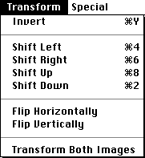

The Transform menu
Commands in the Transform menu become available after you've made a selection in the Character Edit window with the Marquee tool or have chosen Select All from the Edit menu (Command-A).
The menu offers the following functionality:

Figure 1: FontWriter Transform menu.